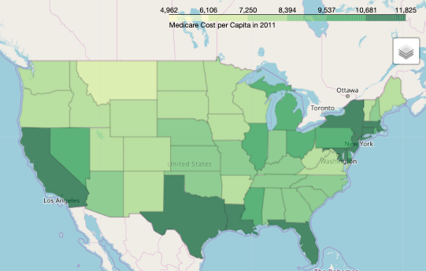
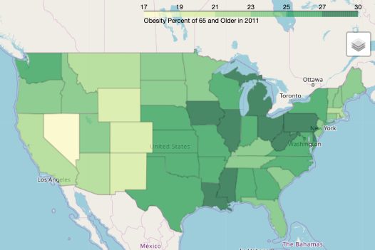
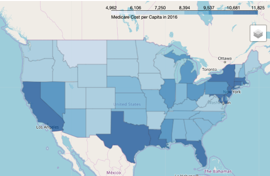
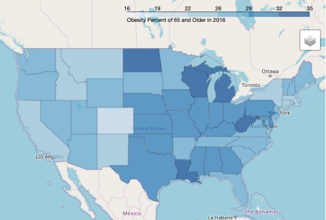

Daniel Love
daniel9love@gmail.com
Furture Data Analyst
Project 1 - Is obesity a cause of rising healthcare costs?
Cost Per Capita of Medicare vs Obesity Rates of People 65 and older (2011)
 
***Choropleth graphs of the US comparing cpc rates to the obesity rates in 2011
Cost Per Capita of Medicare vs Obesity Rates of People 65 and older (2016)
 
***Choropleth graphs of the US comparing cpc rates to the obesity rates in 2011
How to make a choropleth graph:
- # Obese population over the age of 65 df (2011)
# Create a dataframe to hold relevant information
obese_65_data = pd.read_csv('../Clean_2011_2016/obesity_over_65.csv')
obese_65_data_2011 = obese_65_data.loc[obese_65_data['Year']==2011,:]
obese11 = obese_65_data_2011[['State','Percent Adults']]
obese_65_data_2016 = obese_65_data.loc[obese_65_data['Year']==2016,:]
obese16 = obese_65_data_2016[['State','Percent Adults']]
obese16.head()
-
# Creating the Choropleth Graph
# Resource I used to help with graph
# https://python-graph-gallery.com/292-choropleth-map-with-folium/
# Initialize the map:
ob11 = folium.Map(location=[37, -102], zoom_start=4)
# Add the color for the chloropleth:
ob11.choropleth(
geo_data=state_geo,
name='choropleth',
data=obese11,
columns=['State', 'Percent Adults'],
key_on='feature.id',
fill_color='YlGn',
fill_opacity=0.75,
line_opacity=0.25,
legend_name='Obesity Percent of 65 and Older in 2011')
folium.LayerControl().add_to(ob11)
ob11